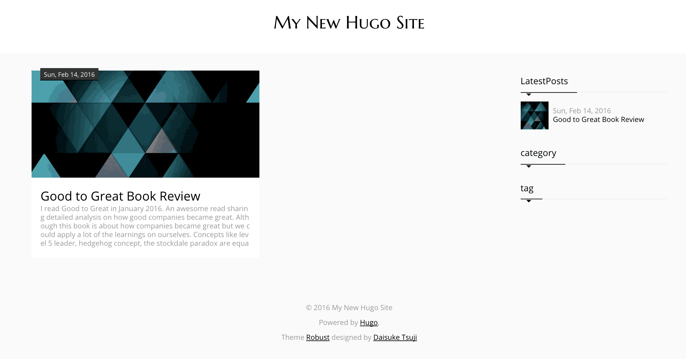
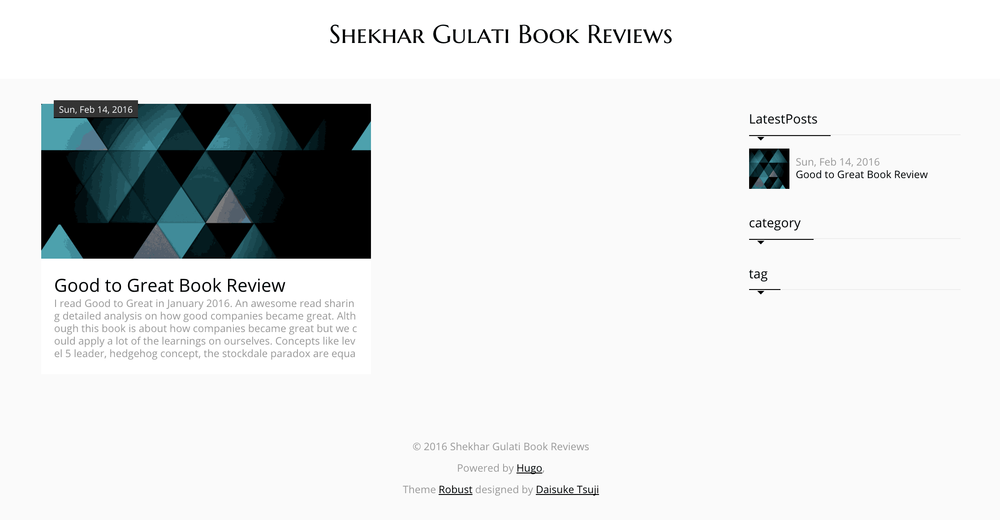
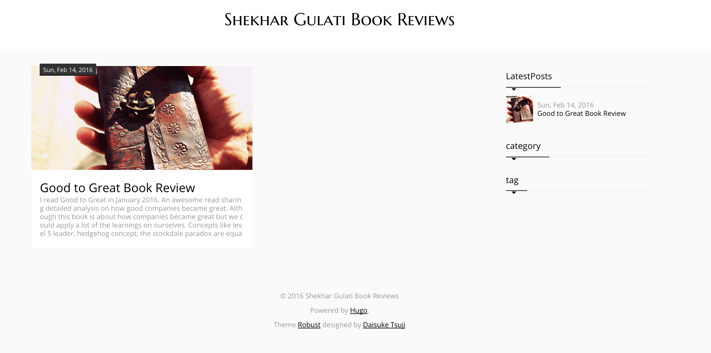
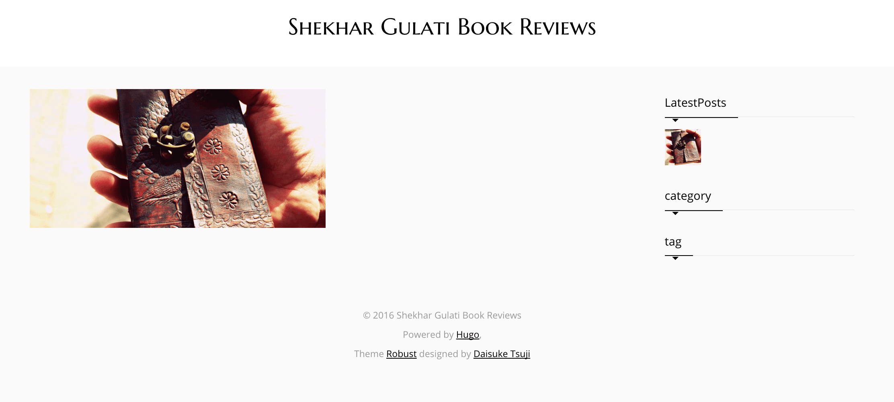

Building a bookshelf
In this quickstart, we will build an online bookshelf that will list books and their reviews.
Note: This quickstart depends on features introduced in Hugo v0.15. If you have an earlier version of Hugo, you will need to upgrade before proceeding.
Step 1. Install Hugo
Go to Hugo Releases and download the appropriate version for your OS and architecture.
Save the main executable as hugo (or hugo.exe on Windows) somewhere in your PATH as we will be using it in the next step.
More complete instructions are available at Installing Hugo.
If you’re on Windows, this quickstart will assume
you’re using Git Bash
(also known as Git for Windows).
Thus all commands will begin with the Bash prompt character (which is $).
Once hugo is installed, make sure to run the help command to verify hugo installation. Below you can see part of the help command output for brevity.
$ hugo help
hugo is the main command, used to build your Hugo site.
Hugo is a Fast and Flexible Static Site Generator
built with love by spf13 and friends in Go.
Complete documentation is available at http://gohugo.io/.
You can check hugo version using the command shown below.
$ hugo version
Hugo Static Site Generator v0.15 BuildDate: 2015-11-26T11:59:00+05:30
Step 2. Scaffold bookshelf hugo site
Hugo has commands that allows us to quickly scaffold a Hugo managed website. Navigate to a convenient location on your filesystem and create a new Hugo site bookshelf by executing the following command.
$ hugo new site bookshelf
Change directory to bookshelf and you will see the following directory layout.
$ tree -a
.
|-- archetypes
|-- config.toml
|-- content
|-- data
|-- layouts
`-- static
5 directories, 1 file
As mentioned in the command output, bookshelf directory has 5 sub-directories and 1 file. Let’s look at each of them one by one.
archetypes: You can create new content files in Hugo using the
hugo newcommand. When you run that command, it adds few configuration properties to the post like date and title. Archetype allows you to define your own configuration properties that will be added to the post front matter wheneverhugo newcommand is used.config.toml: Every website should have a configuration file at the root. By default, the configuration file uses
TOMLformat but you can also useYAMLorJSONformats as well. TOML is minimal configuration file format that’s easy to read due to obvious semantics. The configuration settings mentioned in theconfig.tomlare applied to the full site. These configuration settings includebaseURLandtitleof the website.content: This is where you will store content of the website. Inside content, you will create sub-directories for different sections. Let’s suppose your website has three sections –
blog,article, andtutorialthen you will have three different directories for each of them inside thecontentdirectory. The name of the section i.e.blog,article, ortutorialwill be used by Hugo to apply a specific layout applicable to that section.data: This directory is used to store configuration files that can be used by Hugo when generating your website. You can write these files in YAML, JSON, or TOML format.
layouts: The content inside this directory is used to specify how your content will be converted into the static website.
static: This directory is used to store all the static content that your website will need like images, CSS, JavaScript or other static content.
Step 3. Add content
Let’s now add a post to our bookshelf. We will use the hugo new command to add a post. In January, I read Good To Great book so we will start with creating a post for it. Make sure you are inside the bookshelf directory.
$ hugo new post/good-to-great.md
/Users/shekhargulati/bookshelf/content/post/good-to-great.md created
The above command will create a new directory post
inside the bookshelf/content directory
and create good-to-great.md file inside it.
$ tree -a content
content
`-- post
`-- good-to-great.md
1 directory, 1 file
The content inside the good-to-great.md file looks as shown below.
+++
date = "2016-02-14T16:11:58+05:30"
draft = true
title = "good to great"
+++
The content inside +++ is the TOML configuration for the post.
This configuration is called front matter.
It enables you to define post configuration along with its content.
By default, each post will have the three configuration properties shown above.
- date specifies the date and time at which post was created.
- draft specifies that post is not ready for publication yet so it will not be in the generated site.
- title specifies title for the post.
Let’s add a small review for Good to Great book.
+++
date = "2016-02-14T16:11:58+05:30"
draft = true
title = "Good to Great Book Review"
+++
I read **Good to Great in January 2016**. An awesome read sharing detailed analysis on how good companies became great.
Step 4. Serve content
Hugo has an inbuilt server that can serve your website content so that you can preview it. You can also use the inbuilt Hugo server in production. To serve content, execute the following command inside the bookshelf directory.
$ hugo server
0 of 1 draft rendered
0 future content
0 pages created
0 paginator pages created
0 tags created
0 categories created
in 9 ms
Watching for changes in /Users/shekhargulati/bookshelf/{data,content,layouts,static}
Serving pages from memory
Web Server is available at http://localhost:1313/ (bind address 127.0.0.1)
Press Ctrl+C to stop
This will start the server on port 1313.
You can view your blog at http://localhost:1313/.
When you go to the link, you will see nothing.
There are couple of reasons for that:
- As you can see in the
hugo servercommand output, Hugo didn’t render the draft. Hugo will only render drafts if you pass thebuildDraftsflag to thehugo servercommand. - We have not specified how Markdown content should be rendered. We have to specify a theme that Hugo can use. We will do that in the next step.
To render drafts, re-run the server with command shown below.
$ hugo server --buildDrafts
1 of 1 draft rendered
0 future content
1 pages created
0 paginator pages created
0 tags created
0 categories created
in 6 ms
Watching for changes in /Users/shekhargulati/bookshelf/{data,content,layouts,static}
Serving pages from memory
Web Server is available at http://localhost:1313/ (bind address 127.0.0.1)
Press Ctrl+C to stop
If you go to http://localhost:1313/, you still will not see anything as we have not specified a theme that Hugo should use.
Step 5. Add theme
Themes provide the layout and templates that will be used by Hugo to render your website. There are a lot of Open-source themes available at https://themes.gohugo.io/ that you can use.
Hugo currently doesn’t ship with a
defaulttheme, allowing the user to pick whichever theme best suits their project.
Themes should be added in the themes directory inside the repository root.
$ cd themes
Now, you can clone one or more themes inside the themes directory.
We will use the robust theme,
but at a commit (in its history) that works with this quickstart.
$ git clone https://github.com/dim0627/hugo_theme_robust.git
$ (cd hugo_theme_robust; git checkout b8ce466)
Leave the themes folder.
$ cd ..
Start the server again.
$ hugo server --theme=hugo_theme_robust --buildDrafts
1 of 1 draft rendered
0 future content
1 pages created
2 paginator pages created
0 tags created
0 categories created
in 10 ms
Watching for changes in /Users/shekhargulati/bookshelf/{data,content,layouts,static,themes}
Serving pages from memory
Web Server is available at http://localhost:1313/ (bind address 127.0.0.1)
Press Ctrl+C to stop
Note: If Hugo doesn’t find the specified theme in the
themesdirectory, it will throw an exception as shown below.FATAL: 2016/02/14 Unable to find theme Directory: /Users/shekhargulati/bookshelf/themes/robust
To view your website, you can go to http://localhost:1313/. You will see as shown below.

Let’s understand the layout of the theme. A theme consists of the following:
theme.toml is the theme configuration file that gives information about the theme like name and description of theme, author details, and theme license.
images directory contains two images –
screenshot.pngandtn.png.screenshot.pngis the image of the list view andtn.pngis the single post view.layouts directory contains different views for different content types. Every content type should have two files
single.htmlandlist.html.single.htmlis used for rendering a single piece of content.list.htmlis used to view a list of content items. For example, you will uselist.htmlto view all the posts that have theprogrammingtag.static directory stores all the static assets used by the template. Static assets could be JavaScript libraries like jQuery or CSS styles or images, or any other static content. This directory will be copied into the final site when rendered.
Step 6. Use multiple themes
You can very easily test different layouts by switching between different themes.
Let’s suppose we want to try out the bleak theme.
We clone the bleak theme inside the bookshelf/themes directory.
$ git clone https://github.com/Zenithar/hugo-theme-bleak.git
Restart the server using hugo-theme-bleak as shown below.
$ hugo server --theme=hugo-theme-bleak --buildDrafts
Now, the website will use the bleak theme
and will be rendered differently as shown below.
Step 7. Update config.toml and live reloading in action
Restart the server with the robust theme, as we will use it in this quickstart.
$ hugo server --theme=hugo_theme_robust --buildDrafts
The website uses the dummy values specified in bookshelf/config.toml.
Let’s update the configuration.
baseURL = "http://example.org/"
languageCode = "en-us"
title = "Shekhar Gulati Book Reviews"
[Params]
Author = "Shekhar Gulati"
Hugo has inbuilt support for live reloading. So, as soon as you save your changes it will apply the change and reload the web page. You will see the changes shown below.

The same is reflected in the Hugo server logs as well. As soon as you changed the configuration file, Hugo applied those changes to the affected pages.
Config file changed: /Users/shekhargulati/bookshelf/config.toml
1 of 1 draft rendered
0 future content
1 pages created
2 paginator pages created
0 tags created
0 categories created
in 11 ms
Step 8. Customize robust theme
The robust theme is a good start towards our online bookshelf but we want to
customize it a bit to meet the look and feel required for the bookshelf.
Hugo makes it very easy to customize themes.
You can also create your themes but we will not do that today.
If you want to create your own theme, then you should refer to
the Hugo documentation.
The first change that we have to make is to use a different default image
instead of the one used in the theme.
The theme’s default image used in both the list and single view page resides
inside themes/hugo_theme_robust/static/images/default.jpg.
We can easily override it by creating a simple directory structure
inside the repository’s static directory.
Create an images directory inside the bookshelf/static directory
and copy an image with name default.jpg inside it.
We will use the default image shown below.
Hugo will sync the changes and reload the website to use new image as shown below.

Now, we need to change the layout of the index page so that only images are shown instead of the text. The index.html inside the layouts directory of the theme refer to partial li that renders the list view shown below.
<article class="li">
<a href="{{ .Permalink }}" class="clearfix">
<div class="image" style="background-image: url({{ $.Site.BaseURL }}images/{{ with .Params.image }}{{ . }}{{ else }}default.jpg{{ end }});"></div>
<div class="detail">
<time>{{ with .Site.Params.DateForm }}{{ $.Date.Format . }}{{ else }}{{ $.Date.Format "Mon, Jan 2, 2006" }}{{ end }}</time>
<h2 class="title">{{ .Title }}</h2>
<div class="summary">{{ .Summary }}</div>
</div>
</a>
</article>
Create a new file li.html inside the bookshelf/layouts/_default directory. Copy the content shown below into the li.html. We have removed details of the book so that only image is shown.
<article class="li">
<a href="{{ .Permalink }}" class="clearfix">
<div class="image" style="background-image: url({{ $.Site.BaseURL }}images/{{ with .Params.image }}{{ . }}{{ else }}default.jpg{{ end }});"></div>
</a>
</article>
Now, the website will be rendered as shown below.

Next, we want to remove information related to theme from the footer.
So, create a new directory partials inside bookshelf/layouts.
There, create a new file default_foot.html with the content copied
from the theme’s layouts/partials/default_foot.html.
Replace the footer section with the one shown below.
<footer class="site">
<p>{{ with .Site.Copyright | safeHTML }}{{ . }}{{ else }}© {{ $.Site.LastChange.Year }} {{ if isset $.Site.Params "Author" }}{{ $.Site.Params.Author }}{{ else }}{{ .Site.Title }}{{ end }}{{ end }}</p>
<p>Powered by <a href="http://gohugo.io" target="_blank">Hugo</a>,</p>
</footer>
We also have to remove the sidebar on the right.
Copy the index.html from the theme’s layouts directory to
the bookshelf/layouts directory.
Remove the section related to the sidebar from the HTML:
<div class="col-sm-3">
{{ partial "sidebar.html" . }}
</div>
So far we are using the default image but we would like to use the book image so that we can relate to the book. Every book review will define a configuration setting in its front matter. Update the good-to-great.md as shown below.
+++
date = "2016-02-14T16:11:58+05:30"
draft = true
title = "Good to Great Book Review"
image = "good-to-great.jpg"
+++
I read **Good to Great in January 2016**. An awesome read sharing detailed analysis on how good companies became great. Although this book is about how companies became great but we could apply a lot of the learnings on ourselves. Concepts like level 5 leader, hedgehog concept, the stockdale paradox are equally applicable to individuals.
Grab a (legal) image from somewhere, name it good-to-great.jpg,
and place it in the bookshelf/static/images directory.
After adding few more books to our shelf, the shelf appears as shown below. These are a few of the books that I have read within the last year.
Step 9. Make posts public
So far all the posts that we have written are in draft status.
To make a draft public, you can either run a command
or manually change the draft status in the post to false.
$ hugo undraft content/post/good-to-great.md
Now, you can start the server without the buildDrafts option.
$ hugo server --theme=hugo_theme_robust
Step 10. Integrate Disqus
Disqus allows you to integrate comments in your static blog. To enable Disqus, you just have to set disqusShortname in the config.toml as shown below.
[Params]
Author = "Shekhar Gulati"
disqusShortname = <your disqus shortname>
Now, commenting will be enabled in your blog.
Step 11. Generate website
To generate Hugo website source you can use
to deploy your website on GitHub pages,
first edit bookshelf/config.toml, changing the baseURL line to:
baseURL = "https://<your GitHub username>.github.io/bookshelf/"
Then type the following command.
$ hugo --theme=hugo_theme_robust
0 draft content
0 future content
5 pages created
2 paginator pages created
0 tags created
0 categories created
in 17 ms
After you run the hugo command, a bookshelf/public directory
will be created containing the generated website source.
BTW (in case you tried),
the website isn’t properly accessible via the file:/// protocol.
Step 12. Deploy bookshelf on GitHub pages
Let’s version control your bookshelf:
$ git init
$ echo "/public/" >> .gitignore
$ echo "/themes/" >> .gitignore
$ git add --all
$ git commit -m "Initial commit"
Now the Git repositories under bookshelf/themes
won’t conflict with your bookshelf repository,
and neither will a Git repository in bookshelf/public.
Create a new repository on GitHub named bookshelf (without a README).
Once that’s done, create a new Git repository on your local system
in bookshelf/public and add remote:
$ cd public
$ git init
$ git remote add origin git@github.com:<github-username>/bookshelf.git
There, create and check out a new branch gh-pages.
$ git checkout -b gh-pages
Switched to a new branch 'gh-pages'
Add all the files (within bookshelf/public) to the index,
commit them, and push the changes to GitHub.
$ git add --all
$ git commit -m "bookshelf added"
$ git push -f origin gh-pages
In couple of minutes, your website will be live
at https://<github-username>.github.io/bookshelf/.
Anytime, you can regenerate your site with:
$ (cd ..; hugo --theme=hugo_theme_robust)
$ git add --all
$ git commit -m "<some change message>"
$ git push -f origin gh-pages
This quickstart was originally written by Shekhar Gulati in his 52 Technologies in 2016 blog series.